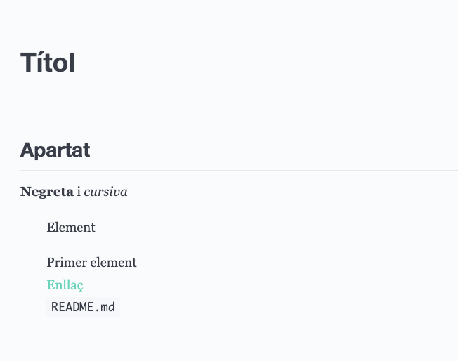

Quan utilitzar-lo
Per a documentació viva al costat del codi: instruccions, guies d'ús, canvis de versió, apunts tècnics i GitHub Pages.
AEA1 · Bloc 0 · WIP
Una manera simple, portable i professional d'escriure documentació tècnica preparada per treballar amb Git.
Enlace a guía completa Descarrega el fichero ejemploMarkdown és habitual entre desenvolupadores, equips de programari, docents i comunitats de codi obert. S'utilitza en README, incidències, notes de versió, manuals i pàgines de projecte perquè és text pla: es pot editar amb qualsevol editor, llegir sense eines especials i comparar amb Git línia a línia.
Per a documentació viva al costat del codi: instruccions, guies d'ús, canvis de versió, apunts tècnics i GitHub Pages.
Per a documents amb maquetació complexa, formularis o disseny editorial precís, és preferible complementar-lo amb PDF, Word o una eina de disseny.
No existeix un percentatge únic i fiable sobre l'ús de Markdown en tota la documentació de codi; sí que és el format habitual de documentació inicial en repositoris, especialment del README.
Consulta la guia de sintaxi de Markdown. També pots enganxar aquest codi a Dillinger.io per veure com es renderitza.
El bloc de codi és el contingut del fitxer .md: lleuger, llegible i versionable.
# Títol
## Apartat
**Negreta** i *cursiva*
- Element
1. Primer element
[Enllaç](https://exemple.cat)
`README.md`Exemple de la previsualització del mateix contingut en un editor Markdown com Dillinger.

Activitat pràctica
perfil.mdCrea un fitxer nou anomenat perfil.md. Serà la teva carta de presentació en Markdown i
ha d'estar escrit amb un to adequat per compartir-lo amb companys i professorat. No hi incloguis
dades personals sensibles, com l'adreça, el telèfon o contrasenyes.
El document ha d'incloure, com a mínim:
- [x]) i pendents (- [ ]);
ratlla almenys un objectiu aconseguit amb ~~ ~~.Abans de lliurar-lo, comprova que el document es visualitza correctament a la previsualització de Markdown de Visual Studio Code i que tots els elements demanats hi apareixen.